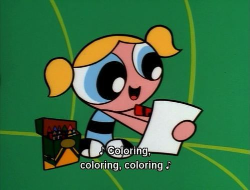

The Powerpuff Girls were created in a laboratory by Professor Utonium.
The ingredients sugar, spice, and everything nice
were the ingredients to create the perfect little girl - but Professor Utonium accidentally added CHEMICAL X!
Blossom, Bubbles, and Buttercup form The Powerpuff Girls, a group of superheros that fight evil.
Bubbles is, well... bubbly! She has a super sweet personality (she does come from the sugar ingredient after all.) She is very friendly, which we can see with her having the most friends at Pokey Oaks (her preschool.) Bubbles is very caring towards others - she will always help an animal in need, like if it's injured or hungry. Her voice is the most high-pitched out of her sisters - a defining trait. Bubbles is not afraid to show her emotions. She will tear up if something upsets her, some people may think she's a crybaby. Although, Bubbles can be quiet fierce and "hardcore" which is evident from the Bubblevicious episode.
"I'm sensitive, you know."
"I'm just as tough and strong and mean as Buttercup and Blossom, but they just don't believe me. They all treat me like a baby. I'll show them, I'll prove that I can be... HARDCORE!"
"Coloring, coloring, coloring. Grab another color doo doo doo."

"There's nothing wrong with talking to yourself."
"Octi says, you should do what you want to do."
Powerpuff Girls Fandom Wiki: Bubbles (1998 TV series)
Google Fonts: Chewy & Varela Round
The Powerpuff Girls Theme Song from Cartoon Network
Powerpuff Girls Fandom Wiki: Bubblevicious
{kind=link}
{kind=link}
{kind=link}
{kind=link}
{kind=link}
{kind=link}